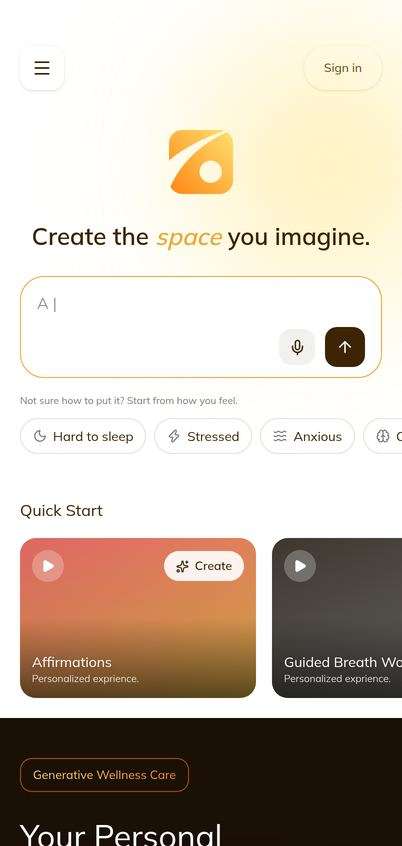
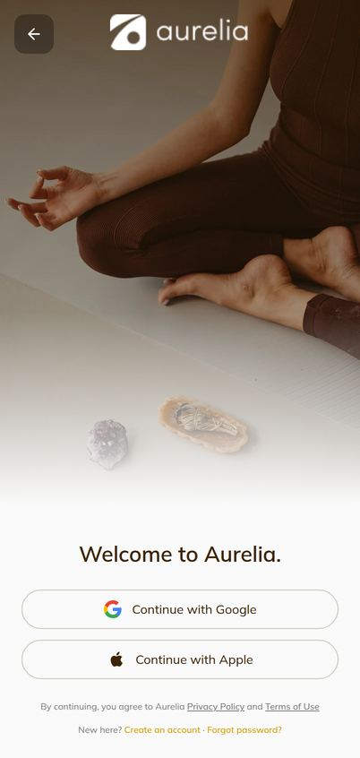
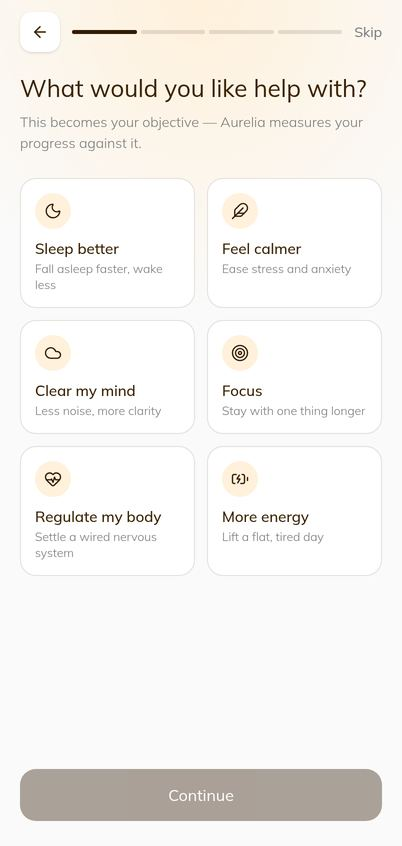
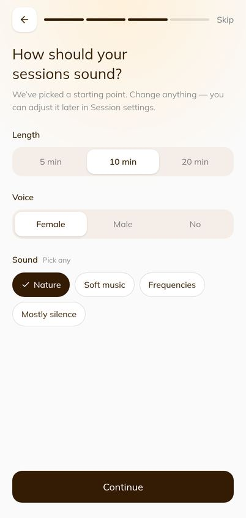
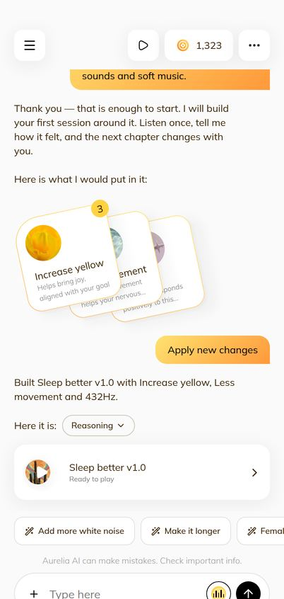
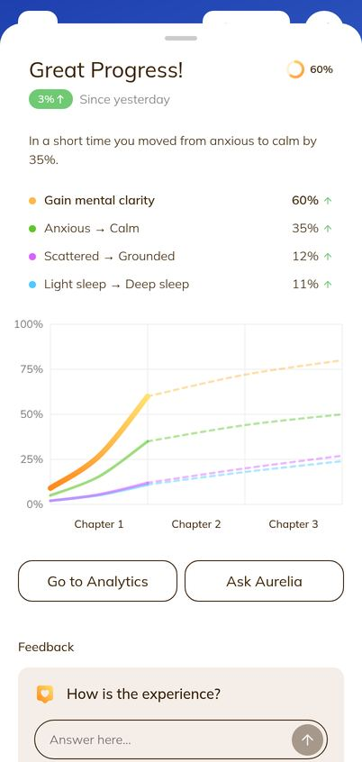
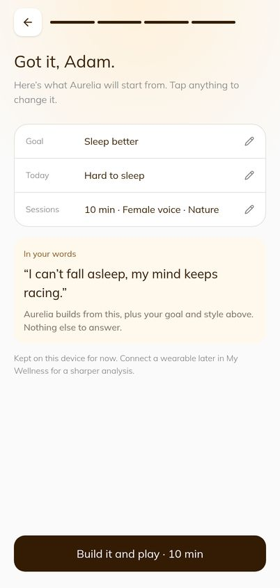
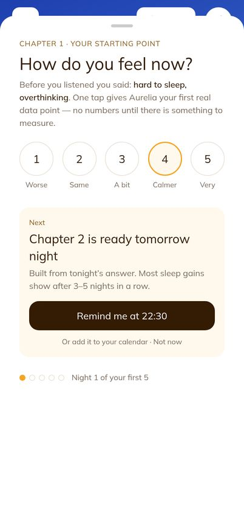
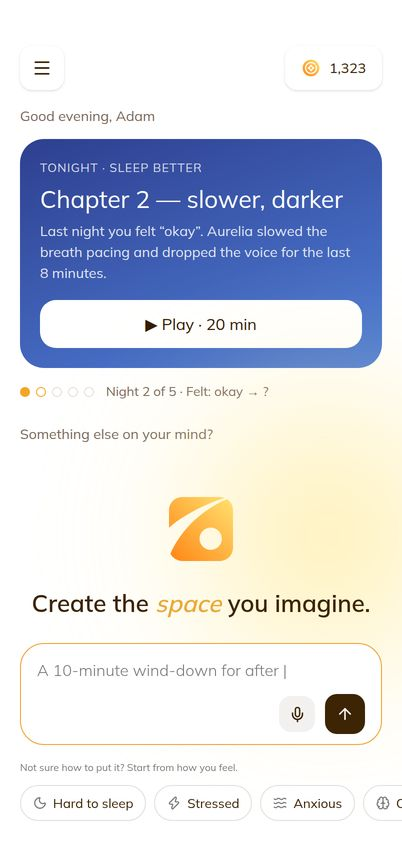

Six simulated people with different wellness needs used the current build (staging v4) from their first tap, answered the same sequenced questionnaire a moderated test would use, and estimated whether they would return on day 1, 7 and 30 — today, and with each suggested change.
Simulation — a hypothesis to test with real users, not a measurement
FINISH A FIRST SESSION45%today → 56% with the fixes
DAY 112%→ 23% (range 18%–29%)
DAY 73.8%→ 9.9% (range 7%–14%)
DAY 301.5%→ 5.4% (range 3%–8%)
Share of all new users who come back and play or build on that day. Health & Fitness apps commonly report roughly 20–27% on day 1, 8–13% on day 7 and 3–8% on day 30.
Prepared forEugene Werner, Daniel — MVP validation
Can a user have a simple flow to solve their wellness goal?
A short flow, yes. A flow that solves their goal, not yet. Five of six reached a playable session in 6–15 taps and under a minute of waiting, so the number of steps is not what stops them. What stops them is that in five of six cases the session was not about what they asked for. Answers came from a sample conversation about someone else’s sleep, every session was the same “Sleep meditation v1.3”, and the progress screen showed results before they had listened. Leo pressed Play on a focus card and never heard anything.
Simplifying the navigation (J038) on its own moves the model very little: D7 goes from 3.8% to 4.0%. The first session has to be theirs before fewer screens matter.
Why will they return, and come back for other wellness goals?
Today, nothing asks them back and nothing is waiting for them. After the first session, Home looks exactly like the signed-out marketing page. There is no next step, no reminder and no sign the session changed anything. Every persona described the same conditions for coming back:
1 · It heard meThe first session follows their words, goal and choices.
2 · A promise“Chapter 2 is ready tomorrow, built from tonight’s answer.”
3 · A cueA reminder at the time they chose — 22:30, school pick-up, before study.
4 · ProofTheir own before/after answers, chapter by chapter. No invented numbers.
5 · Next goalAfter three good chapters: “want help with mornings too?”
Steps 2–4 are a habit loop, and they are what keeps someone coming back. Step 5 is what turns “use Aurelia for sleep” into “build more in Aurelia”. The current build has step 1 for one path out of five and none of steps 2–5.
Points are panel-weighted predictions; the thin bars show the range for each (S1 ±30% on the base rates; the fix scenarios run from 25% to 65% of the modelled lift). The shaded band is the public Health & Fitness benchmark range.
2How this was done
Eugene’s brief: give Claude the retention metric for first-time users and let it simulate, as different personas with different wellness needs, how real people would behave, using a questionnaire sequenced the way a real test would be. Here is exactly what that meant, so the numbers are read for what they are.
Step
What happened
1 · Panel
Six personas covering the goals onboarding offers (sleep, calm, focus, regulate) and the attitudes that change behaviour: skeptic, time-poor, distractible, experienced, clinically referred. Each has a share of the panel (an assumption about Aurelia’s early audience) used to weight the totals.
2 · Real build
Each persona was driven through the actual staging v4 build in a 402 px browser by an automated script: a first-time browser, signed out, onboarding not done. Every tap, wait and screen was recorded. Nothing was mocked up for this step; every screenshot in sections 3–4 is the product as it is.
3 · Different doors
Each persona entered differently — typed on Home, a feeling chip, a Quick Start card, Sign in first, Create an account, skipping onboarding — because a real first visit does not follow one script. This is how F1 surfaced: only one of these doors avoids the sample conversation.
4 · Questionnaire
At each stage the persona answered the questions below, in role, based only on what was on screen at that moment.
5 · Retention model
Each persona gives four probabilities: finishes a first session; returns on D1; still active on D7; still active on D30. These are anchored to the category benchmark. Each fix scales the stages it plausibly affects for that persona, with overlap damping (two cues are not twice one cue). Each fix’s contribution is its Shapley value: its average effect across every order the ten could ship in, so the contributions add up exactly to the total.
The questionnaire, in the order it was asked
A · ScreenerBefore the app. What is your wellness need right now? What have you tried, and why did you stop? When in the day would you use this? How motivated are you, 1–5?
B · First look5-second test on Home. What does this app do? What would you tap first? Clarity, 1–5.
C · The task“Get help with your need.” Taps and waiting time are measured, not asked. Then the Single Ease Question: how easy was that, 1–7? Was anything asked twice?
D · OnboardingDid the questions feel relevant? Did Aurelia understand you, 1–5?
E · First resultDoes this session look made for you, 1–5? Do you believe what the progress screen says, 1–5? What would you change?
F · ValueHow would you feel if you could no longer use Aurelia — very, somewhat or not disappointed? (the Sean Ellis question)
G · Return intentWill you open Aurelia tomorrow, 0–100? What would bring you back? What do you expect to see in a week? Would you use it for a different wellness goal, 0–100?
H · DiarySimulated day 1, day 7 and day 30: “It is the next evening. What do you do?” — answered once for the current build and once with the fixes in place.
What this is not
These are not users. A model playing a persona is more articulate, more patient and more rational than a tired person at 11 pm, and it cannot feel whether the audio actually calmed it — in the build the audio is a short placeholder loop. The simulation is good at finding where the product contradicts itself; it is weak at absolute numbers. Read the percentages as a ranking of fixes and an order of magnitude, then replace them with the real test in section 7.
3The first visit, as Maya saw it
The cleanest of the six paths (“Create my first session”), shown tap by tap. Even here the brief drops her sentence, the proposals contradict her choices, and the player opens on progress she has not made.

Tap 1 · Home: types her problem

Tap 2 · Sign in on send

Tap 3–4 · Asked the goal again

Tap 5–10 · Feeling, length, sound

Tap 11–13 · Reply → Apply → built

Tap 14 · Player: progress she has not made
4Six people, six first visits
Maya, 29 · Sleep — racing mind at 11 pm
Product designer in Jakarta. Has tried Calm for two weeks, stopped. Uses her phone in bed. Patience: low, it is late. Panel share: 25%.
Path taken. Typed “I can’t fall asleep, my mind keeps racing” on Home → Sign in → onboarding (Sleep better, Hard to sleep + Overthinking, 20 min, soft music) → Create my first session → Apply → Play. (14 taps to the player, ~40 s waiting on replies and the build)
“I already told it I can’t sleep. Why is it asking me what I want help with?”
“Increase yellow — helps bring joy? I want to be sleepy, not joyful.”
“I picked 20 minutes and it suggests ‘Make it longer’. And white noise, after I chose soft music.”
“Great Progress, +3% since yesterday? I haven’t pressed play yet. There was no yesterday.”
5/7Ease
3/5Made for me
2/5Trust
45Back tomorrow
Why they would or would not return. She would come back only if she remembered at 11 pm the next night. Nothing reminds her and Home looks exactly as it did before she signed in.
“Great Progress! +3% since yesterday” before the first listen
Raka, 35 · Work stress — wants evidence, not mysticism
Founder, two meetings at once, Apple Watch. Skeptical of “frequencies”. Signs in first to see what he is getting into. Panel share: 20%.
Path taken. Sign in → onboarding (Feel calmer, Stressed) → Explore Aurelia first → My Wellness → Connect → back to Home, typed “Give me something for work stress, no spiritual stuff” → Apply → Play. (14 taps to the player, including a 3-tap detour to check his data)
“Apple Watch, Google Calendar and Conversation History are already on? I never connected anything.”
“‘Looks like you had a good sleep last night, score improved by 7%’ — and a message from me saying it was too short. I never wrote that.”
“I said no spiritual stuff. It built 432 Hz and ‘Increase yellow’.”
“The progress chart says I moved from anxious to calm by 35%. Based on what?”
3/7Ease
1/5Made for me
1/5Trust
10Back tomorrow
Why they would or would not return. The first credible number he sees decides it. Today every number is invented, so he leaves on day 0 and tells a co-founder it is “a mood board”.
Sari, 42 · Anxiety — has five minutes, twice a day
Mother of two, works part-time. Not a wellness-app person. Uses whatever is one tap away. Panel share: 20%.
Path taken. Tapped the Anxious chip (it fills “I feel anxious.”) → Send → Sign in → onboarding (Feel calmer, Anxious, 5 min) → Continue where I was → Apply → Play. (13 taps to the player)
“It answers ‘the useful hour is the one right after work… rather than bedtime’. I said I’m anxious, now.”
“It made a ‘Sleep meditation v1.3’. I asked for five minutes of calm.”
“Edits on this session paused until 5:34 PM — I have sent one message. Am I being charged?”
4/7Ease
2/5Made for me
2/5Trust
30Back tomorrow
Why they would or would not return. She returns if the app is where her hand already goes at the anxious moment (a reminder at school pick-up) and if the 5 minutes actually calmed her. Neither is in place.
Off-topic reply, sleep session, paywall on message one
Leo, 22 · Focus — exam season, phone-distracted
Student, TikTok-native, gives an app about 30 seconds. Responds to streaks and visible progress. Panel share: 15%.
Path taken. Tapped Play on the “Focus Sound” Quick Start card → Sign in wall → onboarding (Focus, Can’t focus, 5 min) → Continue where I was → lands in the demo chat about sleep. (12 taps and nothing has played)
“I pressed Play. It asked me to sign in. Then five questions. Then a chat about my sleep score.”
“Where is the focus sound? I’m out.”
2/7Ease
1/5Made for me
2/5Trust
15Back tomorrow
Why they would or would not return. He needed sound within 10 seconds of tapping Play; sign-in can come after he likes it. A 7-day focus streak with a reminder before study time is what would bring him back.
Dewi, 51 · Experienced meditator — wants it made for her
Three years on Headspace. Knows exactly what she wants and will compare. Most likely to pay, most likely to notice shortcuts. Panel share: 10%.
Path taken. Sign in → Skip onboarding → Explore → Sessions → Home, typed “Recreate a body scan like the one I do on Headspace, but with my own pace” → Apply → Play → Upgrade. (6 taps to the player (she skipped onboarding))
“Sessions shows thirteen sessions with Edit and Delete, all Published. None are mine.”
“I asked for a body scan. I got ‘Sleep meditation v1.3’ with 432 Hz.”
“Edits paused after one message. I would pay — but for what I asked, not this.”
5/7Ease
2/5Made for me
2/5Trust
35Back tomorrow
Why they would or would not return. She is the persona most likely to use Aurelia for a second and third goal — if the first session proves it listens. Today it proves the opposite.
Body scan request → Sleep meditation v1.3 + edit limit
Tom, 38 · Burnout — therapist asked him to regulate his nervous system
Recovering from burnout, cautious with health data, follows instructions to the letter. A referral user: high intent, low tolerance for being misread. Panel share: 10%.
Path taken. Typed “My therapist said I should work on regulating my nervous system” → Create an account → onboarding (Regulate my body, Stressed + Low energy, 20 min, mostly silence) → Continue where I was → Apply → Play → Settings. (15 taps to the player)
“It replied ‘For focus the rule is that it has to be uninteresting’. I didn’t mention focus.”
“I chose ‘mostly silence’. The session is a sleep meditation with colours.”
“Conversation History is switched on. I talked about my therapist.”
3/7Ease
2/5Made for me
1/5Trust
20Back tomorrow
Why they would or would not return. He would build a routine if Aurelia behaved like a careful practitioner: asks before using data, follows the brief, reports honestly. He would return daily for weeks — the highest-value retention in this panel.
Answered as if he had asked about focusDay-0 progress he has not earned
5Questionnaire results
Each persona’s answers on the current build. Colour marks the weak end (red) and the strong end (green) of each scale. Clarity of Home and ease of the task score in the middle; understanding, fit and trust score low — which is where retention is lost.
Persona
Clarity 1–5
Ease (SEQ) 1–7
Understood 1–5
Made for me 1–5
Trust 1–5
If gone
Back tomorrow 0–100
2nd goal 0–100
Maya, 29 Sleep — racing mind at 11 pm
4
5
4
3
2
Somewhat
45
25
Raka, 35 Work stress — wants evidence, not mysticism
3
3
2
1
1
Not
10
5
Sari, 42 Anxiety — has five minutes, twice a day
4
4
2
2
2
Not
30
15
Leo, 22 Focus — exam season, phone-distracted
3
2
1
1
2
Not
15
10
Dewi, 51 Experienced meditator — wants it made for her
4
5
2
2
2
Somewhat
35
40
Tom, 38 Burnout — therapist asked him to regulate his nervous system
3
3
1
2
1
Not
20
10
Mean
3.5
3.7
2.0
1.8
1.7
0 very
26
18
“If gone” is the Sean Ellis product–market-fit question; a product is usually said to have traction when 40% would be very disappointed. Here none of the six would be.
What went wrong, and how often
Finding
Who hit it
Fix
F1
Five of six land in the demo conversation Every path except “Create my first session” opens the sample thread: a sleep score “improved by 7%”, and a user message (“It was good, but it was too short”) the person never wrote.
Raka, Sari, Leo, Dewi, Tom
R2
F2
Replies and builds ignore the goal Replies match a keyword from somewhere else (“For focus…” to a nervous-system request; “rather than for bedtime” to “I feel anxious”). Every build is Increase yellow + Less movement + 432 Hz and is titled “Sleep meditation v1.3”. “No spiritual stuff” still gets 432 Hz.
All six
R3
F3
A paywall on the first message “Edits on this session paused” appears after one message, because the demo thread’s sends count toward the free limit.
Sari, Dewi, Tom
R2
F4
Progress before the first listen The player opens on “Great Progress! +3% since yesterday … moved from anxious to calm by 35%”, three chapters drawn, objective “Gain mental clarity” — for someone who chose Sleep and has not pressed play.
All who reached the player
R5
F5
Their words are asked for twice, then dropped A message typed on Home leads to sign-in, then onboarding asks the goal and feeling again. The primary button sends an onboarding brief without the sentence they typed; the secondary sends the sentence without the brief.
Maya, Sari, Tom
R1
F6
A Play button that does not play Quick Start “Play” goes to a sign-in wall and onboarding, then the cockpit — no audio, and nothing about the card that was tapped.
Leo
R4
F7
Nothing asks them back After the first session Home is identical to the signed-out marketing page. No next step, no reminder, no “Chapter 2”. Notifications are invented social activity (“You have now upgraded to Aurelia AI Plus”).
All six
R6, R7
F8
Other people’s things presented as theirs Sessions lists 13 catalogue sessions with Edit / Delete / Published; My Wellness shows “Session 1: Ocean Meditation”; Connect has Apple Watch, Google Calendar and Conversation History switched on for a new account.
Raka, Dewi, Tom
R9
F9
A return visit finds nothing (demo build) Sign-in and the built session live in memory, so the next day’s visit starts signed out with no session. This is why the current build cannot measure retention at all.
Everyone, on day 1
P0
6The suggestions, and what each is worth
Ten changes, ranked by how much each adds to retention in the model. Effort: S is days, M is a sprint or more. The three right-hand columns are percentage points of all new users, and each column adds up to the total gain.
Change
Fixes
Effort
D1
D7
D30
R1
One first message, in their words If they typed something, onboarding opens pre-filled from it (goal and feeling inferred, editable), shows “In your words”, and has one button: Build it and play. Their sentence and the brief go together.
F5
S
+1.0
+0.4
+0.2
R2
A fresh first thread, no early paywall Every first-time path starts an empty thread for this person. The free limit starts counting after the first session has been played, not from the sample thread.
F1, F3
S
+1.8
+0.7
+0.4
R3
Build from the goal Reply, proposed changes and session title follow the stated goal, length, voice and sound, and respect a “no …”. No suggestion that contradicts a choice made a minute earlier.
F2
M
+1.9
+0.9
+0.4
R4
A Play that plays Quick Start plays a 60-second preview before sign-in; sign-in is asked when they want to save or personalise it. After the build, one tap starts the audio.
F6
S
+0.9
+0.3
+0.1
R5
Honest day 0 + one-tap check-in The first player sheet says “Chapter 1 · your starting point” and asks “How do you feel now?” (1–5). Numbers appear only once there are two real check-ins.
F4
S
+1.3
+0.8
+0.5
R6
Chapter 2 reminder Right after the check-in: “Chapter 2 is ready tomorrow — remind me at 22:30?” (web push where allowed, else calendar file or email). The single strongest return cue in the model.
F7
M
+2.0
+1.4
+0.8
R7
Personal Home on return A signed-in Home leads with tonight’s chapter, what changed and why (“you felt okay, so Aurelia slowed the pacing”), and a 5-night dot track. Marketing blocks go for signed-in users.
F7
M
+1.1
+0.7
+0.4
R8
Real progress from check-ins Progress and Analytics are drawn only from the person’s own before/after answers (and a wearable, if they connect one), chapter by chapter.
F4
M
+0.3
+0.6
+0.6
R9
Only their own things Empty, inviting states for Sessions, My Wellness and Notifications on day 0; every Connect source off until they switch it on.
F8
S
+0.7
+0.3
+0.2
R10
Invite a second goal After three good chapters: “Sleep is improving. Want help with mornings too?” — the path from one goal to “build more in Aurelia”.
—
S
+0.0
+0.1
+0.3
All ten
+11.0
+6.2
+3.8
Read the ranking, not the decimals
The return cue (R6) is worth the most on its own, but it pays off only on top of R2, R3 and R5. A reminder that brings someone back to a session that ignored them makes them leave faster. R1, R2, R3 and R5 together come to about S-effort plus one M. With R6 added, the model gives D1 19%, D7 7.0% and D30 3.0% — roughly double today’s numbers, and close to the bottom of the category range.
Simplification (J038) is worth doing, but for a different reason. It adds about 0.8 pt of D7 on top of the fixes, and 0.2 pt without them. It makes the product easier to explain and to build on. It does not, by itself, give anyone a reason to come back.
Predicted retention per persona
Persona · share
Current v4 · D1 · D7 · D30
+ 10 fixes
+ fixes + simplification
Maya25%
18% · 6% · 2.3%
30% · 13% · 7.1%
32% · 14% · 7.9%
Raka20%
7% · 2% · 0.6%
16% · 6% · 2.8%
17% · 6% · 3.1%
Sari20%
12% · 4% · 1.3%
22% · 9% · 4.6%
23% · 10% · 5.2%
Leo15%
7% · 2% · 0.4%
17% · 5% · 1.7%
18% · 6% · 2.0%
Dewi10%
16% · 6% · 3.1%
29% · 15% · 10.5%
30% · 16% · 11.6%
Tom10%
12% · 4% · 1.9%
25% · 13% · 7.9%
26% · 14% · 8.8%
Weighted panel
12% · 4% · 1.5%
23% · 10% · 5.4%
24% · 11% · 6.0%
Day 7 per persona: current (light) → with fixes (orange) → with fixes and simplification (dark). Dewi and Tom gain most: they arrive with the most specific intent, so a session that listens matters most to them. Raka stays lowest whatever changes. For him, credible evidence (a connected wearable, honest numbers) is the product, so R8 and Connect done properly matter more than anything on this page.
7What the top three would look like
Drafts drawn over the live build to make the suggestions concrete — not final design, and nothing has been changed in the code.

R1 · In your wordsOnboarding keeps the sentence they typed and ends on one button that builds and plays.

R5 + R6 · Honest day 0, then the promiseNo invented progress. One tap of how they feel, and “Chapter 2 tomorrow — remind me at 22:30”.

R7 · Home that waits for themTonight’s chapter first, what changed and why, and a five-night track.
8Before testing with real users
P0 — the current build cannot measure retention
Sign-in is not persisted, by design, and the session a person builds lives in memory. A real tester who comes back tomorrow starts signed out and finds nothing they made (F9), so any D1 figure taken on this build measures the demo, not the product. Until accounts exist, a test build at least needs both kept in this browser’s storage. That is a small change, and it is a decision (it reverses a recorded choice in AuthContext), so it is listed as decision D2 below.
A real test that checks this simulation
What
How
Who
8–12 first-time people, recruited to match the six needs above (two per goal is enough). Nobody who has seen Aurelia.
Session 1 (moderated, 30 min)
The same questionnaire, stages A–G, in the same order, on their own phone. Record taps and the think-aloud.
Days 1–30 (unmoderated)
No prompting from the team; only what the product itself does. Click insights already records views and taps per deployment. Add three events — session_played, checkin_answered, returned — keyed to an anonymous per-browser ID, which it does not have today. Count a day as retained only if they played or built something, not just opened the app.
Short diary
On days 1, 7 and 30, one question: “Did you open Aurelia? Why or why not?” This answers the “why”, which the numbers cannot.
Pass line for the MVP
D1 ≥ 25%, D7 ≥ 10%, D30 ≥ 5%, and at least 40% “very disappointed”. Below the line, the questionnaire stage where scores dropped shows which fix to look at.
Compare
Put the measured numbers next to sections 5–6. Where the simulation was wrong, the persona assumptions are what to correct; the model itself (retention-sim-2026-10-25/simulation-scripts.txt) is rerun with the new base rates.
Decisions needed
Decision
Recommendation
D1
Which fixes form v5 (a new design version, staging only)?
R1, R2, R3, R5 and R6 first; R7–R10 in the next round; J038 simplification after that.
D2
Keep sign-in and built sessions across reloads in a test build?
Yes, for the test only, until there is a backend.
D3
Which reminder channel is in scope without a backend?
Calendar file (.ics) now; web push once there is a server to send it.
D4
Should Quick Start play before sign-in?
Yes — a 60-second preview, with sign-in asked when they save or personalise.
D5
When does the free limit start counting?
After the first session has been played.
AAppendix — model and assumptions
Persona
Share
Finish 1st session
D1 | finished
D7 | D1
D30 | D7
Maya, 29
25%
60%
30%
32%
40%
Raka, 35
20%
38%
18%
25%
35%
Sari, 42
20%
45%
26%
30%
38%
Leo, 22
15%
25%
28%
22%
25%
Dewi, 51
10%
52%
30%
40%
50%
Tom, 38
10%
45%
26%
36%
46%
Benchmark. Public roundups of Health & Fitness app retention (Adjust, AppsFlyer, Statista via vendor blogs) disagree: roughly 20–27% D1, 8–13% D7, 3–8% D30. No meditation-specific source was found. Aurelia is a web app with no push today, which usually retains below native apps, so the current-build base rates sit below that band.
Scenarios. All three assume accounts and sessions persist (decision D2). Without that, the build’s measured D1 would be close to zero for reasons unrelated to design.
Lift. Each fix multiplies the stages it affects, per persona. Combined lift = 1 + 0.45 × (product of multipliers − 1); the ranges use 0.25 and 0.65. Stage probabilities are capped at 90%.
Contribution. Shapley values over all 210 orderings of the ten fixes. Each column adds up to the “All ten” row.
Panel shares are an assumption about Aurelia’s first audience. Changing them changes the totals but not the order of the fixes.
Reproduce. The persona scripts, model and chart code are archived in docs/reviews/retention-sim-2026-10-25/simulation-scripts.txt. Every number on these pages comes from one run of that model.